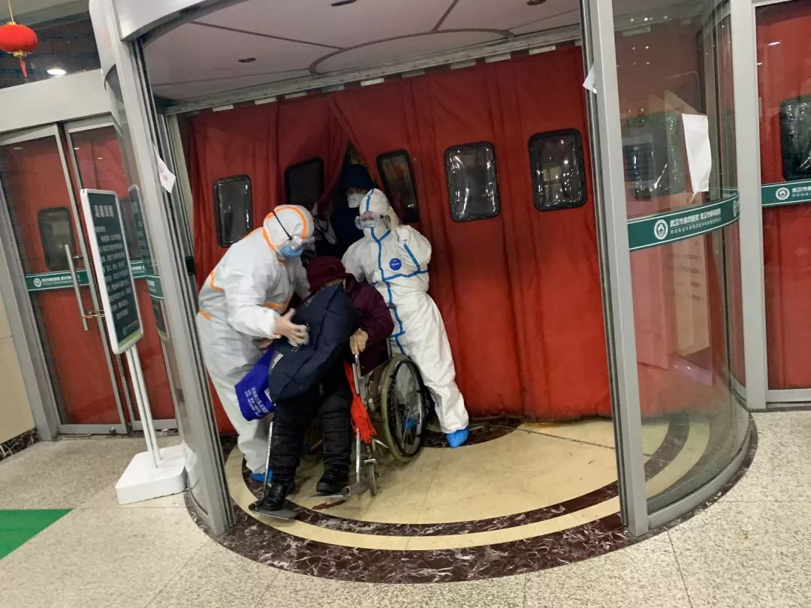

武汉“封城”战疫情：民航铁路高速等出城通道相继关闭
原文链接 备份链接 关闭高速公路已是迫在眉睫，此前有因为自驾出游导致疑似感染的病例。截至1月23日下午14时，出武汉市的高速公路开始封闭 湖北省武汉市洪山区武鄂高速公路龚家岭收费站，已经堵车一个半小时 文 |《财经》记者 陈亮 李皙寅 王 …
*************▲*************大年三十晚上，武汉市第四医院古田院区门诊，医务人员在救助病患。 （李福荣/图）
全文共*4261*字，阅读大约需要10分钟
电视里《难忘今宵》奏乐响起的那一刻，走进一位女性顾客，买了一大捧百合、玫瑰。家里没摆鲜花，总是感觉缺点什么，“就算再难，也要把生活过好。”这位女顾客说。
打开手机视频，与妈妈同步切菜、架油锅、颠勺，一通忙活，做好了10道菜。吃饭也同步，镜头连线，十几名家庭成员，隔着屏幕举杯贺岁。
爸爸发热后，始终不能被确诊。除夕夜，爸爸在房间里自我隔离，母子两个人随便做了点饭菜，往年必备的多宝鱼没有了，腊鱼、腊鸭也没有了。
零点钟声敲响之前，解放军3支医疗队共450人抵达武汉，广东等省份的医疗队也开赴武汉，一时成为社交平台刷屏的消息，这些医疗支援队将迅速增强武汉抗击疫情的力量。
本文首发于南方周末 未经授权 不得转载
文| 南方周末记者 李在磊 敬奕步
南方周末实习生 宋思静 闫力元 龚柔善
责任编辑 | 何海宁
1
这是和苗第一次没在家里过年——那是一种夹杂着惊恐、孤单与勇气的体验。这名华中科技大学大三学生原本预订了2020年1月23日晚间回云南老家的航班，23日凌晨武汉“封城”公告后，老友的连环Call将其叫醒：“你走不了了。”
武汉市新型冠状病毒感染的肺炎疫情防控指挥部通告称，自23日10时起，全市城市公交、地铁、轮渡、长途客运暂停运营。无特殊原因，市民不要离开武汉，机场、火车站离汉通道暂时关闭，恢复时间另行通告。
和苗退掉机票，抢到一张8:40的高铁票，稍事冷静：说不定身上携带有病毒，为了避免传染给家人，她决定留守江城。放下行李，出门囤了一堆N95口罩、医用酒精、洗手液、84消毒液、抗病毒口服液，除了吃饭，基本不出宿舍。
宿管阿姨定期测试体温，学院统一发放零食，食堂免费提供中药汤剂，同学们赞助各大视频网站的会员，不过和苗无心煲剧，应接不暇的新闻排山倒海，23日晚上，她不停刷着手机，直至深夜。
1月24日是大年三十，武汉淅淅沥沥下起冷雨，和苗耐不住寂寞，出门透气。路遇校园生活区的餐馆小哥、水果店阿姨、便利店大叔，她情不自禁道了声“新年快乐”。自忖平时不是一个性情活泼的人，暗暗惊讶刚刚那一瞬间的主动，出乎意料，对方都热切回应。他们也都是滞留武汉的人啊——刹那间，和苗感受到一种莫名的力量。
千万级人口的庞然大物，城市功能骤然暂停。“封城”次日，进出市区的哨卡趋近严厉，医疗物资短缺的问题持续蔓延，口罩、防护服、试剂盒成为热搜词汇。城区内，商场、电影院里，“春节大酬宾”“大年初一上映”的大幅招贴上，被蒙上一张歇业声明。地铁、公交车一夜停摆，紧随其后，网约车暂停服务，出租车单双号限行。迫不得已，共享单车、共享电动车关键时刻发挥起作用。
不得不出门办事的市民，如果运气不赖，仍能拦到正常打表计费的出租车。乘着除夕这天是“双号”，长江北边一位出租车司机，七八点钟开始拉客，一路畅通，几乎没跑空单。虽然行人寥寥无几，但是可供选择的出行方式也屈指可数，生意反倒好于平时。“明天‘单号’就不能干了。”他的计时单位是“车份”，能跑一天就能给公司交一天的租金，不过凡事随缘，“大过年的，不让跑也正好歇歇”。
汉口区的一名外卖小哥，本已提前回到出租屋，与老婆、孩子包饺子，不过却接到一个非常时期的特殊任务：派送一小箱防护设备。24日上午十点钟左右，他穿上制服，骑着“小电驴”一路呼啸，在下午两点半，把包裹着口罩、消毒水、洗手液的“单子”圆满送达。
接收“单子”的年轻人小向，刚刚在宾馆里和武汉江夏区的妈妈通完视频电话——他恰好回武汉老家出差。妈妈试探性询问，能不能回家看一眼。“当然不能。”小向说，他担心这几天接触的人多，回家不安全。下午准备了年夜饭，妈妈忍不住说，做好菜之后，要给儿子送过来。
下午约四点钟，被征调到新型冠状病毒肺炎定点诊疗医院的护士小韩开始上班。她在电话中告诉南方周末记者，4个小时一换班，小韩换班出来，给爱人打电话：“今年不能团圆了。”当晚，“坚守”“我是医生”“我是护士”这些纸牌拜年照片在社交网络刷屏的时候，医护人员依然奋战在一线。马上就要跨年了，“不能确诊”的病患仍旧密密麻麻聚集在医院走廊里。
晚上十一点多，武汉市第四医院古田院区的门诊大楼灯火通明，隔街相望一团漆黑，只有花艺店门口一排菊花，泛着暖暖的光。武汉有着大年初一“烧清香”的习俗，街坊邻居、亲朋好友拜年时，会给去年有老人去世的友邻，送上一束冬菊以示缅怀。
就在“封城”前一天，花艺店老板高小兵进了两大车鲜花，没成想“什么倒霉事全赶上了”，他仍不甘心，坚持开业到第二天再打烊，“万一还是有人惦记着下边的长辈，买不到怎么办？”
电视里《难忘今宵》奏乐响起的那一刻，走进一位女性顾客，买了一大捧百合、玫瑰。家里没摆鲜花，总是感觉缺点什么，“就算再难，也要把生活过好。”这位女顾客说。
2
裹着围巾、口罩，杵在行李箱前，3个人面面相觑。2020年1月23日，武汉高铁站东广场停车场，刘思平夫妇面脸愁容。
“走也走不了，回也回不去。”五十多岁的刘思平在南京做生意，买了中转武汉返回河南南阳的高铁。1月22日晚上抵达武汉，住宿一晚，打算第二天搭乘下午两点钟的列车返乡。早晨听说“封城”的消息后，他们赶忙往车站挤，上午十点钟，被清理“出场”。“10点前的票早就买不到了，难道真要在武汉过年？”他们3人站在车站，手足无措。

“封城”首日的高铁站门口。（李福荣/图）
旅馆通知刘思平，续住的话房费会涨。举目无亲，老家亲戚打来电话，建议他们想办法赶去周边小城，家里人再开车来接。不过，出城的车费也在涨。
“回不了家”的不止刘思平一家三口。计划转车回长沙的另外一家三口，早上到站后，原本打算坐十点多的高铁班次。也有一些误点的乘客，被通知不能改签，只能退票。站在路边，他们举棋不定，究竟是回武汉市区，还是再想他法离开。
郭爽则觉得她留在武汉过年是“命中注定”。大学毕业后，男朋友到杭州工作，她是独生子女，舍不得离父母太远，坚持回到离家近的省城武汉，进了一家事业单位，“回来没多久，就遇到这样的大事”。
年底，在双方老人催促下，结婚事宜提上日程。郭爽与男朋友商量，初四到初六，安排双方父母见面，正式商讨一下婚礼。女婿第一次来，郭爽妈妈年货备置前所未有丰盛，早早晒好一捆板鸭，订好车票、酒店。结果，疫情扑面而来，“做什么都不行了，板鸭也消化不掉了”。
郭爽爸爸觉悟高，主动打电话说，先别回去了。郭爽心想，怎么会有这种父母啊，别人都盼着儿女回去。爸爸耐心教导，你是党员，这个时候要响应国家政策，“没问题倒还好，要有问题的话，回黄石就是一个病原体”。
原本欢欢喜喜“见家长”的一个春节，变成了一个人留守武汉。刚开始也不觉得孤单，“封城”那天，小区楼下超市开始抢货，她只抢到一箱泡面。又去菜市场瞅了瞅，发现菜市场关门了。最后只在生鲜超市捡了几块山药，勉强买了点肉，将就着过个年吧。“我有一个锅，还买了牛肉，抢到两条鱼，就打算自己烤个肉，给爸妈看看，也算是过年了。”郭爽说。
如果郭爽是“坐困愁城”，那么许杰则是“自投罗网”。他的爱人是上文的护士小韩，两人异地。很早便隐隐觉察到疫情来势非同小可，在深圳做软件开发的他，闪现过春节不回武汉的念头。这一念头很快消散，“我不能不管自己的老婆孩子。”许杰在电话里对南方周末记者说，他请假提前回来，打算在武汉老家待几天，然后把母子俩接到深圳过年，没想到，“封城”来得这么突然。
当时，许杰打算带着儿子、岳母回郊区乡下祖宅“躲一躲”。临行前，小韩仍要在医院加班，岳母担忧其安危，拒绝丢下女儿一个人。万般无奈，许杰只能带着儿子先行一步。
不料，前脚许杰离开，后脚小韩就被征调到发热门诊，吃住全在医院。一家几口分隔三地。“当时就有人问我说，小韩不去行不行，那是她的职业，我尊重她的想法。”
幸好两岁半的儿子很乖，不哭也不闹。许杰照看着孩子，每天给岳母、老婆通视频，彼此感受到各自的生活状态。
3
按照往年的惯例，刘泽才通常先去爱人何芳老家湖北黄石，喝上几天大酒，然后驱车回河南老家，与父母、兄弟一起过节。今年，两口子与一对儿女只能留在武汉守岁，何芳第一次单独张罗一桌年夜饭。
远程指导下，在“封城”前，何芳就购置了装满一整个冰箱的食材，打开手机视频，与妈妈同步切菜、架油锅、颠勺，一通忙活，做好了10道菜。吃饭也同步，镜头连线，十几名家庭成员，隔着屏幕举杯贺岁。
“这种感觉也挺好。”唯一遗憾是，年夜饭高潮环节的派压岁钱活动，只得以微信红包的形式取代，这让刘泽才精心准备的精美红包无从施展，有些怅然若失。热闹完，一家四口人说了悄悄话，许了新年愿望，安静的过年氛围，竟然别有一种风味。何芳全职主妇，在武汉照看两个孩子，刘泽才在北京创业，个把月回家一次，他们十分珍视难得的团聚时刻。
尽管小家庭团聚了，但病毒阴影还是高悬于顶，让人精神紧绷。刘泽才热衷公益，每天开车往外跑，“总是想着（为社会）做点什么。”何芳嘴上没说什么，心里忧心忡忡。

大年三十晚上，武汉市第四医院古田院区门诊，排队就诊的病患依旧很多。（李福荣/图）
与刘泽才相比，患者家属杨宇虹一家三口的除夕夜并不踏实。爸爸发热后，始终不能被确诊。除夕夜，爸爸在房间里自我隔离，母子两个人随便做了点饭菜。饭桌上只有两个人，无心下咽，往年必备的多宝鱼没有了，腊鱼、腊鸭也没有了。杨宇虹决定一个人打打游戏，打发掉春节假期。
早在一个月前，武汉市民张霞的妈妈就出现咳嗽、发烧等症状，一直在几个医院之间辗转，要求做检测均未果。“（我们）非常地无奈，也没有任何的办法和措施，只能无尽地等待。”张霞说。
就在大年二十九，全家人商量，不再去折腾，众人把母亲接回家，营养品、补品，好好调养。大年三十那天，妈妈喝了一大碗鸡汤，又吃了两枚炖鸡蛋。张霞觉得回到自己家中，妈妈的情绪逐渐平复下来，“在家休养的话，可以更好地照料”。
尽管回到家里有所好转，全家人早已疲惫不堪。除了备好母亲的营养品，大家没有包饺子，也没有开电视。“2020，对于我们武汉这一块儿的人来说，已经感觉不到年味了”。
也正是在这个除夕夜，零点钟声敲响之前，解放军3支医疗队共450人抵达武汉，广东等省份的医疗队也开赴武汉，一时成为社交平台刷屏的消息。这些医疗支援队将迅速增强武汉抗击疫情的力量。在广州白云机场，前来送行的广东省卫健委主任段宇飞说：“我要说的话有很多，千言万语汇聚成一句话：大家千万要保重，平安归来，这是我对大家最终的要求。”
（刘思平、郭爽、许杰、刘泽才、何芳、张霞为化名）


文章已于修改
原文链接 备份链接 关闭高速公路已是迫在眉睫，此前有因为自驾出游导致疑似感染的病例。截至1月23日下午14时，出武汉市的高速公路开始封闭 湖北省武汉市洪山区武鄂高速公路龚家岭收费站，已经堵车一个半小时 文 |《财经》记者 陈亮 李皙寅 王 …
原文链接 备份链接 ********** *****他们很想回家，和孩子最近一次见面还是暑假。但谁也不敢回去。“万一有什么事，也不能把病毒扩散到别处，是不是？” ***** 6时35分，汉口站广场上，一队警务人员正在开会。 新京报记者 …
原文链接 备份链接 25.01.2020导读：武汉实况视频。 来源 | 央视新闻 23日10时起 武汉全市公交、地铁、轮渡、 长途客运暂停运营。 机场、火车站离汉通道暂时关闭 B站UP …
原文链接 备份链接 【武汉特稿】围城的第三天 ｜ 舒飞廉 日期:2020年01月25日 23:43:31 作者:舒飞廉 1月22日深夜武汉市府发布封城令，23日10时封城，隔绝对外交通，武汉进入历史时刻。我留在武汉，没有回老家孝感去。与 …
原文链接 备份链接 作 者：叶青 中南财经政法大学教授、博导 湖北省统计局副局长 正和岛蓝色岛邻 来 源：正和岛（ID：zhenghedao） 我算是外来的武汉人。 1979年10月从老家福建建阳到湖北财经学院（即现在的中南财经政法大学） …